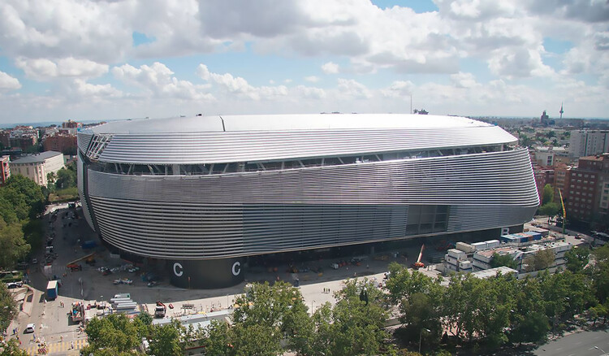
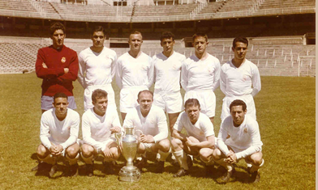
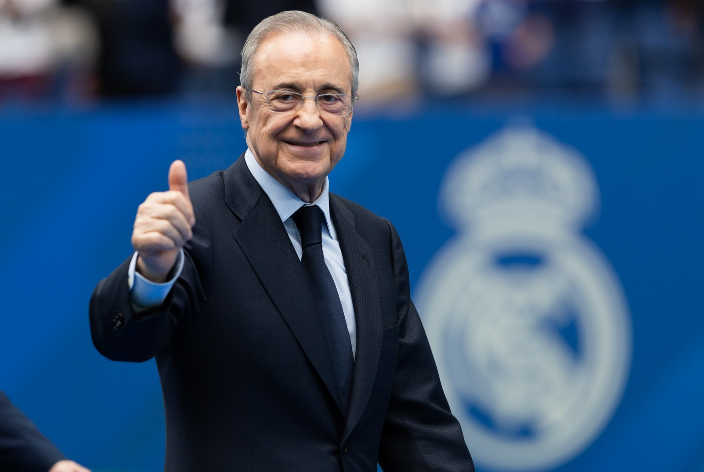

Die Geschichte von Real Madrid CF
Real Madrid Club de Fútbol steht für mehr als ein Jahrhundert puren Fußball. Gegründet am 6. März 1902 in der spanischen Hauptstadt, ist der Klub heute der erfolgreichste Fußballverein der Welt – und eine Legende, die weit über den Sport hinausreicht.

Bild: Estadio Santiago BernabéuAlles begann in einer Zeit, als Fußball gerade erst in Spanien ankam. Eine Gruppe junger Enthusiasten gründete am 6. März 1902 den „Madrid Football Club". In den ersten Jahren kämpfte der Verein um Anerkennung und Mitglieder, doch schon bald zeigte sich das besondere Potenzial dieses Klubs. Im Jahr 1920 verlieh König Alfonso XIII. dem Verein das königliche Prädikat – fortan trug er stolz den Titel „Real" im Namen. Diese Auszeichnung war mehr als ein Symbol: Sie spiegelte den Anspruch wider, den der Verein an sich selbst stellte.
Die ersten Jahrzehnte waren von kontinuierlichem Wachstum geprägt. 1931/32 gewann Real Madrid erstmals die spanische Meisterschaft und legte damit den Grundstein für eine Dominanz, die bis heute anhält. 1947 wurde das Estadio Santiago Bernabéu eröffnet – benannt nach dem visionären Präsidenten, der den Verein zu Weltruhm führen sollte. Das Stadion in der Hauptstadt wurde zur Kathedrale des Fußballs, zu einem Ort, an dem Geschichte geschrieben wird.
Die goldene Ära – Di Stéfano und der Europapokal

Bild: Frühe JahreZwischen 1955 und 1960 erlebte Real Madrid seine erste grosse goldene Ära. Mit Alfredo Di Stéfano als überragender Spielmacher dominierte der Verein die neu gegründete Europameisterschaft der Landesmeister – heute bekannt als Champions League. Fünf Mal in Folge gewannen die Madrilenen diesen prestigeträchtigsten Vereinswettbewerb Europas, ein Rekord, der bis heute unerreicht geblieben ist. Di Stéfano, der magische Argentinier, verkörperte wie kein anderer den Geist von Real Madrid: Eleganz, Klasse und unbedingter Siegeswillen.
Nach dieser unvergesslichen Epoche folgten Jahrzehnte, in denen der Verein immer wieder nationale Titel holte und international präsent blieb. La Liga wurde zur Jagd nach Meisterschaften, von denen Real Madrid heute mehr als 36 vorweisen kann – mehr als jeder andere spanische Verein. Gleichzeitig reifte der Anspruch heran, auch auf europäischer Bühne wieder die Nummer eins zu werden.
Die Galáctico-Ära und die Rückkehr zur Weltspitze

Bild: Florentino PérezMit der Wahl von Florentino Pérez zum Präsidenten begann eine neue Epoche. Pérez, der den Verein seit 2009 in seiner zweiten Amtszeit führt, prägte den Begriff der „Galácticos" – Weltklassespieler, die Real Madrid aus aller Welt anzog. Zinédine Zidane, Ronaldo, David Beckham und später Cristiano Ronaldo – Spieler, die den Fußball über Jahrzehnte hinweg prägten, trugen das Weiß von Real Madrid. Dieser mutige und visionäre Ansatz machte den Verein nicht nur sportlich erfolgreich, sondern auch zur globalen Marke, die weltweit Hunderte Millionen Fans begeistert.
Zwischen 2014 und 2024 erlebte Real Madrid eine Renaissance auf europäischem Niveau. Weitere Champions-League-Titel folgten in rascher Folge, darunter drei Siege in Folge von 2016 bis 2018 – ein Kunststück, das in der modernen Ära des europäischen Fußballs einmalig ist. Das Trainertalent Zinédine Zidane, nun auf der Bank statt auf dem Rasen, führte das Team zu diesen Triumphen. Mit insgesamt über 15 Champions-League-Titeln ist Real Madrid der mit Abstand erfolgreichste Verein in der Geschichte dieses Wettbewerbs.
Heute, mehr als 120 Jahre nach der Gründung, ist Real Madrid CF ein Symbol für Beständigkeit und Grösse. Der renovierte Bernabéu, das neue Schmuckstück der Hauptstadt, empfängt Woche für Woche Fans aus aller Welt. Die Geschichte von Real Madrid ist noch lange nicht zu Ende – sie wird mit jedem Spiel neu geschrieben.